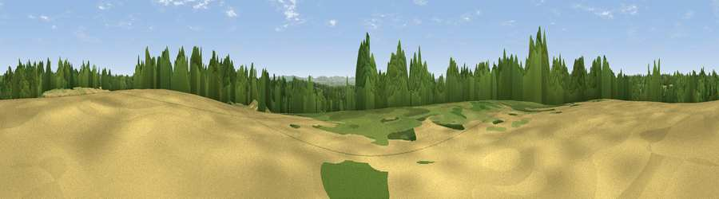

Viewpoint near Crabtree
#42232 in England · top 79% of its area beats it · near CrabtreeWhere it is
The exact computed spot (TQ 22825 26125). Click the marker for map links.
The view, rendered

A 360° render of this exact spot computed from the terrain model, tree cover and land cover — summer colours, afternoon light, calibrated against photographs of famous viewpoints. Real trees, hedges and buildings will differ in detail.
The panorama
Grey silhouette: terrain skyline in each direction (720 bearings, Earth curvature and refraction included). Dashed green: skyline with trees (+15 m) and buildings (+8 m) as obstacles. Blue strip: how far the ground is visible on each bearing.
Where the view opens
Wedge length = distance to the farthest visible ground on that bearing (vegetation-aware). Rings at 10, 25 and 50 km.
What fills the view
50% woodland · 36% grassland · 13% cropland · 2% built-up
Angular shares of the visible panorama (visual magnitude), not map area. Landscape diversity 0.46 (0–1 Shannon).
Key numbers
More beautiful places nearby
The staircase of upgrades: each row has a higher view potential than everything closer. Driving times are estimates from straight-line distance, calibrated against real road routing — check an actual route before setting out.
| Place | Direction | Drive | Score |
|---|---|---|---|
| Viewpoint near Warninglid | E · 2 km | ~4 min | 29.0 |
| Viewpoint near Crabtree | S · 2 km | ~5 min | 40.1 |
| Sharpenhurst Hill | WNW · 9 km | ~18 min | 46.1 |
| Viewpoint near Kingsfold | NNW · 10 km | ~20 min | 55.0 |
| Wolstonbury Hill | SSE · 13 km | ~25 min | 79.6 |
| Edburton Hill | S · 15 km | ~27 min | 82.3 |
| Chanctonbury Ring | SSW · 17 km | ~29 min | 87.0 |
| Firle Beacon | SE · 33 km | ~50 min | 88.9 |
51.02139, -0.25016 · source: screening · position refined by local search. Computed location — check access rights before visiting.